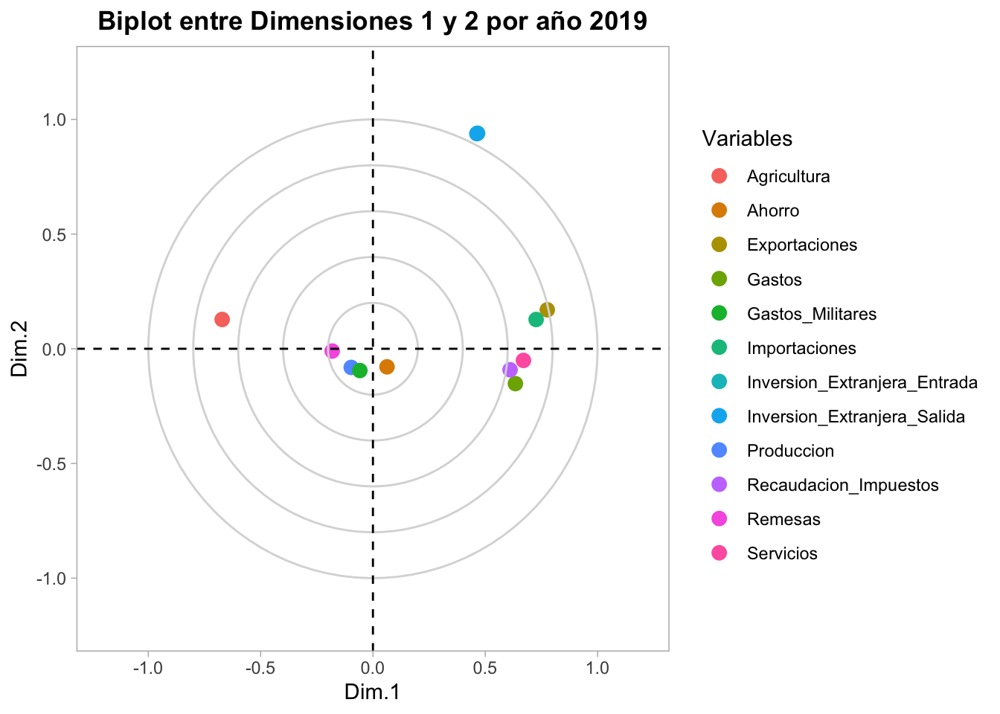
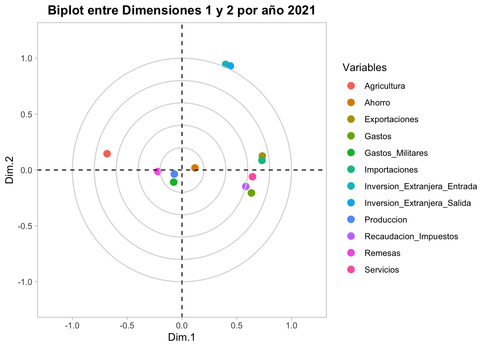

| Variables | Tipo_Variable | Descripción |
|---|---|---|
| Pais | Nominal | País |
| Año | Ordinal | Año |
| Region | Nominal | Región |
| Servicios | Cuantitativa | Servicios, valor agregado (% PIB) |
| Gastos | Cuantitativa | Gastos (% PIB) |
| Ahorro | Cuantitativa | Ahorro bruto (% PIB) |
| Exportaciones | Cuantitativa | Exportaciones de bienes y sevicios (% PIB) |
| Importaciones | Cuantitativa | Importaciones de bienes y servicios (% PIB) |
| Produccion | Cuantitativa | Producción, valor agregado (% PIB) |
| Inversion_Extranjera_Entrada | Cuantitativa | Inversión extranjera, entrada neta de capital (% PIB) |
| Inversion_Extranjera_Salida | Cuantitativa | Inversión extranjera, salidad neta de capital (% PIB) |
| Deuda | Cuantitativa | Total Deuda (% PIB) |
| Recaudacion_Impuestos | Cuantitativa | Recaudación impostivia (% PIB) |
| Agricultura | Cuantitativa | Agricultura, silvicultura y pesca, valor agregado (% PIB) |
| Remesas | Cuantitativa | Remesas de trabajdores y compensación de empleados recibidas (% PIB) |
| Gastos_Militares | Cuantitativa | Gastos militares (%PIB) |
Taller 4 - Modelo DUAL
0. Información general
Unidad de Estudio (Individuos): La unidad de observación básica es el país, pero los resultados se interpretan a nivel de región, dado que los países han sido agrupados en nueve regiones geográficas y étnicas. Las reguines son: Asia Central y del Sur, Oriente Medio, Asia del Este, Pacífico y Oceanía, Europa Occidental, Europa del Este, Norte de África, África Subsahariana, Latinoamérica y el Caribe y Norteamérica.
Horizonte Temporal: El estudio abarca un periodo de cinco años (2019 al 2023). Este marco es crítico, ya que incluye el impacto y la recuperación de la crisis global iniciada en 2020, lo que potencia el análisis de trayectorias.
Variables Activas (Cuantitativas): Se emplearán 13 variables económicas (e.g., Servicios, Gastos, Deuda, Exportaciones, Remesas) para construir el espacio factorial. Todas son expresadas como porcentaje del PIB (%), asegurando que miden la estructura económica relativa y no el tamaño absoluto.
Variables de Agrupamiento/Clasificación: El análisis está desagregado por nueve Regiones geográficas predefinidas (e.g., Latinoamérica y el Caribe, Europa Occidental, África Subsahariana), lo que facilita una interpretación geopolítica de los resultados.
Las variables a analizar son las siguientes:
1. Análisis exploratorio
1.1. Revisión de datos faltantes
| x | |
|---|---|
| Pais | 0 |
| Country Code | 0 |
| Año | 0 |
| Region | 0 |
| Agricultura | 113 |
| Deuda | 809 |
| Gastos | 489 |
| Exportaciones | 190 |
| Inversion_Extranjera_Entrada | 132 |
| Inversion_Extranjera_Salida | 243 |
| Importaciones | 190 |
| Produccion | 162 |
| Remesas | 103 |
| Recaudacion_Impuestos | 488 |
| Servicios | 100 |
| Gastos_Militares | 337 |
| Ahorro | 310 |
Limpiar faltantes: El proceso de aseguramiento de la calidad de los datos es fundamental antes de aplicar el Análisis Factorial Múltiple Dual (DMFA). La fase de limpieza de nulos se centra en la correcta identificación y conversión de los valores ausentes (.. a NA). Para mejorar la robustez del modelo, es imperativo eliminar registros completos si estos carecen de datos en la totalidad de las variables activas, o considerar la eliminación de variables cuyo volumen de nulos sea tan extremo que comprometa la estructura factorial. No obstante, para preservar las trayectorias de los países y mantener la máxima cantidad de información valiosa, el método preferido para los pocos nulos restantes será la imputación de datos faltantes. a conitnuación, se detalla el paso a paso realizado para la limpiea de datos faltantes:
- Interpolación de variables, usando el método na.spline.
- Exclusión de registros, en los casos en los que todos los datos sean faltantes para las series numéricas.
- Eliminación de variables, si la cantidad sigue siendo significativa: una cantidad mayor a 40% de datos faltantes serán eliminadas.
- Si quedan faltantes en algunos países, se imputarán los registros con base en la mediana de la región al que pertenecen y el año.
| x | |
|---|---|
| Pais | 0 |
| Country Code | 0 |
| Año | 0 |
| Region | 0 |
| Agricultura | 0 |
| Gastos | 0 |
| Exportaciones | 0 |
| Inversion_Extranjera_Entrada | 0 |
| Inversion_Extranjera_Salida | 0 |
| Importaciones | 0 |
| Produccion | 0 |
| Remesas | 0 |
| Recaudacion_Impuestos | 0 |
| Servicios | 0 |
| Gastos_Militares | 0 |
| Ahorro | 0 |
Con los datos limpios, se procede a hacer el análisis exploratorio.
1.2. Análisis multivariado
Variables numéricas vs. Año y Región
Análisis general por región
En términos generales, haciendo una desagregación de cada variable económica por región, se puede decir que:
| Hallazgo Clave por Variable | Patrones Destacados |
|---|---|
| Estructura Productiva (Agricultura/Producción/Servicios) | África Subsahariana y Asia Central/Sur: Alta dependencia agrícola (valores altos y dispersos). Norteamérica y Europa Occidental son regiones que se destacan con valores altos en el rubro de servicios, y los países de Lationamérica también es destacable lo que aporta el sector servicio en el PIB de estos países. Por otro lado, África Subsahariana y Asia Central/Sur tienen los valores más bajos. En producción, las regiones son similares, pero Norteamérica es la región más baja en este rubro. |
| Solidez Fiscal y Ahorro | En general, los países asiáticos al parecen tienen una mayor tendencia al ahorro, con base en la mediana de estas regiones con respecto a las demás regiones. Destacan Asia del Este y Europa Occidental, con mayor tendencia al Ahorro y variabilidad. África Subsahariana y Norte de África: Valores de Ahorro más bajos. En cuanto a recaudación de impuestos, Europa Occidental presenta una mediana elevada en esta variable, mientras Oriente Medio el que tiene la mediana más baja. |
| Apertura Comercial (Exp. e Imp.) | Europa (Occidental/Este): mayor integración comercial (Altas Exportaciones e Importaciones). Norteamérica/Asia del Este: Grandes Importadores. |
| Flujos de Capital (Remesas) | Latinoamérica y el Caribe y Asia Central/Sur: Valores altos y dependencia estructural de Remesas. |
| Gasto y Seguridad (Gastos/Gastos Militares) | Oriente Medio: Alta prioridad y gasto en la dimensión militar. Norteamérica y Europa Occidental: Alto Gasto Total del gobierno. |
Análisis de cada variable por región y año
En la mayoría de las variables se tiene una caída en el año 2020 debido a la pandemia del COVID-19 (como las variables de ahorro, inversión extranjera, o Exportaciones/Importaciones), sin embargo otras suben (como los gastos) en el mismo por la misma razón. Luego, se presentan recuperaciones a niveles antes de la pandemia, o incluso superiores para estas variables. A continuación, se presenta un análisis detallado por año y por región.
Año 2019

Haciendo un análisis por región, para el año 2019 se tiene lo siguiente:
| Categoría | Patrones Destacados |
|---|---|
| Estructura Productiva (Agricultura/Producción/Servicios) | Agricultura: muy alta y dispersa en África Subsahariana y Asia Central/Sur; baja y estable en Europa Occidental y Norteamérica. Producción: Norteamérica, Europa Occidental y Asia del Este/Pacífico por encima de las demás regiones; África Subsahariana y Asia Central/Sur rezagadas. Servicios: altos en Europa Occidental y Norteamérica; medios-altos en Asia del Este/Pacífico; bajos en África Subsahariana y Asia Central/Sur. En términos generales, se mantienen los mismos patrones y las jerarquías regionales comparado con el análisis global (sin temporalidad), reforzando el patrón global, con contrastes más marcados (especialmente en Agricultura alta en regiones emergentes y Servicios/Producción altos en avanzadas). |
| Solidez Fiscal y Ahorro | Recaudación: alta y consistente en Europa Occidental y Norteamérica; baja y muy heterogénea en África Subsahariana y Asia Central/Sur; intermedia en Latinoamérica. Ahorro: alto en Asia del Este/Pacífico y Europa Occidental; bajo en África Subsahariana; variabilidad visible en Europa del Este y Latinoamérica. similar al grupo anterior, 2019 mantiene consistencia con el análisis sin temporalidad, pero se observa un poco más de heterogeneidad intra-regional en regiones de menor ingreso. |
| Apertura Comercial (Exp. e Imp.) | Exportaciones/Importaciones con medianas altas en Europa Occidental, Norteamérica y Asia del Este/Pacífico; bajas en África Subsahariana y Asia Central/Sur. Latinoamérica y Europa del Este muestran dispersión notable (combinación de economías muy abiertas y otras menos). En general, 2019 es congruente con el patrón sin temporalidad; resalta más heterogeneidad en regiones intermedias (LatAm o Europa del Este). |
| Flujos de Capital (Remesas) | Muy altas (y muy dispersas) en Asia Central/Sur y Latinoamérica; bajas o casi nulas en Europa Occidental, Norteamérica y Asia del Este/Pacífico. Distribuciones con colas superiores marcadas por países puntuales en estas regiones. Esta categoria ern el año 2019 replica el patrón sin temporalidad. |
| Gasto y Seguridad (Gastos/Gastos Militares) | Gasto total: alto en Norteamérica y Europa Occidental; bajo en África Subsahariana; intermedio en Latinoamérica y Europa del Este. Gasto militar: Oriente Medio muestra valores muy elevados con outliers pronunciados; Norteamérica alto pero más estable; las demás regiones en niveles moderados a bajos. El año 2019 acentúa los picos de gasto militar en Oriente Medio (debido a la constante tensión con Israeel y sus países vecinos) y mantiene el liderazgo de gasto total en regiones avanzadas. |
Año 2020

Para el 2020, la pandemia del COVID-19 afectó los gastos, recaudación de impuestos o ahorros. sin embargo, los patrones siguen siendo similares al análisis sin temporalidad. A continuación, se resumen los hallazgos:
| Categoría | Patrones Destacados |
|---|---|
| Estructura Productiva (Agricultura/Producción/Servicios) | En el 2020, África Subsahariana y Asia Central/Sur mantienen sus patrones con Agricultura alta y dispersa; Europa Occidental y Norteamérica con Agricultura baja y estable. Producción/Servicios altos y más compactos en Europa Occidental, Norteamérica y Asia del Este/Pacífico, pero ligeramente más bajos que el 2019 (efecto pandemia); bajos en África Subsahariana y Asia Central/Sur; mayor heterogeneidad en regiones emergentes. Comparando con el 2019 y patrón sin temporalidad, se mantienen las jerarquías regionales, aunque en 2020 se observan contrastes algo más marcados en extremos y ligero aumento de dispersión en regiones intermedias (Latinoamérica, Europa del Este). |
| Solidez Fiscal y Ahorro | En 2020, Recaudación sigue siendo alta y consistente en Europa Occidental/Norteamérica; baja y heterogénea en África Subsahariana/Asia Central-Sur; intermedia en Latinoamérica y ligeramente bajo vs 2019. Ahorro elevado en Asia del Este/Pacífico y Europa Occidental; bajo en África Subsahariana; variabilidad en Europa del Este y Latinoamérica. Comparando con 2019 hay un ligero aumento de heterogeneidad en 2020 en grupos intermedios para ahorros, sin cambios en el orden relativo, y es un poco más homogéneo en recaudación de impuestos. Versus el patrón sin temporalidad, no hay cambios mayores. |
| Apertura Comercial (Exp. e Imp.) | Exportaciones/Importaciones con medianas altas en Europa Occidental/Norteamérica/Asia del Este-Pacífico; bajas en África Subsahariana/Asia Central-Sur. Latinoamérica y Europa del Este con dispersión notable (brechas intra-regionales). vs 2019: el patrón es similar; 2020 muestra algo más de heterogeneidad en regiones mixtas, pero medianas bajas vs 2019, acentuando el efecto de pandemia. vs patrones sin temporalidad: Misma jerarquía; el global presenta dispersión más moderada; 2020 acentúa diferencias dentro de regiones intermedias. |
| Flujos de Capital (Remesas) | En el 2020, las remsesas siguen siendo muy altas y muy dispersas en Asia Central/Sur y Latinoamérica; bajas o casi nulas en Europa Occidental/Norteamérica/Asia del Este-Pacífico. Distribuciones con colas superiores dominadas por pocos países. vs 2019 y patrón sin temporalidad, el 2020 hace más visibles los máximos y colas en la distribución de las remesas a nivel regional. |
| Gasto y Seguridad (Gastos/Gastos Militares) | Gasto total alto en Norteamérica/Europa Occidental; bajo en África Subsahariana; intermedio en Latinoamérica/Europa del Este. Gasto militar: Oriente Medio con outliers muy elevados; Norteamérica alto pero más estable; las demás regiones moderado-bajo. esto indica la influencia de la pandemia, en el que los gastos fueron llevados más a controlar la epidemia y a la salud de las personas, inviertiendo menos en otros rubreos como el militar. |
Año 2021
El 2021 presenta una leve recuperación comparando con el 2020, debido a la “normalidad” pos-COVID19. A continuación, se presentan los siguientes hallazgos:
| Categoría | Patrones Destacados |
|---|---|
| Estructura Productiva (Agricultura/Producción/Servicios) | En el 2021 se mantiene la jerarquía: Europa Occidental y Norteamérica con Producción/Servicios altos y compactos y Agricultura baja; África Subsahariana y Asia Central/Sur con Agricultura alta y dispersa y Producción/Servicios bajos; Asia del Este/Pacífico en niveles altos/intermedios con menor dispersión. Comparando con el 2020: Se recuperan ligeramente las medianas de Producción/Servicios en regiones avanzadas (leve repunte respecto al bache de 2020); Agricultura sin cambios sustantivos de posición. vs patrón sin temporalidad: coincide la ordenación estructural; el general suaviza picos/colas; 2021 enfatiza extremos puntuales. |
| Solidez Fiscal y Ahorro | Recaudación alta y estable en Europa Occidental/Norteamérica; baja y heterogénea en África Subsahariana/Asia Central-Sur; Latinoamérica intermedia. Ahorro elevado en Asia del Este/Pacífico y Europa Occidental; bajo en África Subsahariana; variabilidad visible en Europa del Este y LatAm. vs 2020: se recupera levementa la Recaudación y Ahorro en regiones avanzadas, aunque en regiones emergentes persiste heterogeneidad. vs patrones sin temporalidad: se exhibe menor variabilidad interna. |
| Apertura Comercial (Exp. e Imp.) | Para el año 2021, las Exportaciones/Importaciones mantienen medianas altas en Europa Occidental/Norteamérica/Asia del Este-Pacífico; bajas en África Subsahariana/Asia Central-Sur; LatAm y Europa del Este con dispersión notable, por la mezcla de economías muy abiertas y menos abiertas. vs 2020: se observa un incremento en medianas (reapertura y normalización del comercio) en regiones avanzadas y parte de Asia del Este/Pacífico; regiones rezagadas permanecen por debajo. vs patrón sin temporalidad: 2021 muestra brechas intra-regionales más visibles en regiones mixtas. |
| Flujos de Capital (Remesas) | En el 2021, las remesas se mantienen muy altas y dispersas en Asia Central/Sur y Latinoamérica; bajas o casi nulas en Europa Occidental/Norteamérica/Asia del Este-Pacífico. Se mantienen colas superiores por pocos países. vs 2020: Igual o ligeramente mayor en las regiones líderes (las medianas se ven tan altas o un poco más); regiones avanzadas siguen bajas. vs patrones sin temporalidad: El global amortigua extremos; 2021 hace más visibles picos concentrados. |
| Gasto y Seguridad (Gastos/Gastos Militares) | Gasto total sin cambio en sus patrones: alto en Europa Occidental/Norteamérica; bajo en África Subsahariana; intermedio en LatAm/Europa del Este. Gasto militar: Oriente Medio conserva outliers muy elevados; Norteamérica alto pero más estable; el resto moderado/bajo. vs 2020: Niveles similares o ligeramente superiores en Gasto total en avanzadas (continúa la senda de normalización); Gasto militar mantiene picos en Oriente Medio sin cambios de orden. vs Global: Mismo patrón; el global suaviza outliers, mientras 2021 resalta máximos. |
Año 2022

El año 2022 sigue en recuperación luego de la pandemia del 2020, por ende, la mayoría de los indicadores tienden a aumentar. a continuación, se repsentan los hallazgos para este año:
| Categoría | Patrones Destacados |
|---|---|
| Estructura Productiva (Agricultura/Producción/Servicios) | Agricultura: 2022 mantiene medianas altas en África Subsahariana y Asia Central/Sur (sin cambios relevantes vs 2019–2021) y bajas en Europa Occidental/Norteamérica. Producción: 2022 muestra medianas ligeramente superiores a 2021 en Europa Occidental/Norteamérica (consolidación tras 2020) y altas estables en Asia del Este/Pacífico; bajas estables en África Subsahariana/Asia Central-Sur. Servicios: 2022 con medianas iguales o algo mayores que 2021 en Europa Occidental; Norteamérica se mantiene alta; LatAm intermedia con dispersión; África Subsahariana baja. |
| Solidez Fiscal y Ahorro | Recaudación: 2022 con medianas levemente por encima de 2021 en Europa Occidental; Norteamérica estable-alta; África Subsahariana baja estable; LatAm intermedia estable. Ahorro: 2022 alto y estable en Asia del Este/Pacífico; Europa Occidental ligero incremento vs 2021; África Subsahariana baja; Europa del Este con variabilidad. Vs 2019–2021: no hay cambios de jerarquía; se observan ajustes menores al alza en economías avanzadas. |
| Apertura Comercial (Exp. e Imp.) | Para el año 2022, las Exportaciones/Importaciones presentan medianas más altas que 2021 en Europa Occidental/Norteamérica y ligero aumento en Asia del Este/Pacífico (normalización pos-pandemia); LatAm y Europa del Este mantienen medianas intermedias con amplia dispersión; África Subsahariana/Asia Central-Sur bajas estables. Vs 2020: 2022 se ubica claramente por encima (continuación de la recuperación). Vs 2019: 2022 aparece similar o levemente superior en economís avanzadas; similar en economías rezagadas. |
| Flujos de Capital (Remesas) | El año 2022 mantiene medianas altas en Asia Central/Sur y LatAm, similares o marginalmente superiores a 2021; Europa Occidental/Norteamérica/Asia del Este-Pacífico permanecen bajas. |
| Gasto y Seguridad (Gastos/Gastos Militares) | Gasto total: año 2022 alto y estable en Europa Occidental/Norteamérica (medianas igualwa o ligeramente superiores vs 2021), bajo en África Subsahariana, intermedio en LatAm/Europa del Este. Gasto militar: 2022 sin cambios de mediana relevantes a simple vista; Oriente Medio conserva valores altos con outliers; Norteamérica alto y estable; resto moderado-bajo. |
Año 2023

El año 2023 presenta una recuperación consolidad luego de la pandemia del COVID-19, y persisten brechas en algunas regiones como África Subsahariana y Asia Central/Sur.
| Categoría | Patrones Destacados |
|---|---|
| Estructura Productiva (Agricultura/Producción/Servicios) | Agricultura: 2023 mantiene consistencia en África Subsahariana y Asia Central/Sur, sin cambios relevantes vs 2022; dispersión ligeramente menor (menos outliers). Producción: medianas levemente altas en Europa Occidental y Norteamérica (recuperación consolidada),pero similar en Asia del Este/Pacífico vs el año anterior; regiones rezagadas sin mejora visible. Servicios: medianas levemente altas en Europa Occidental y Norteamérica vs 2022; LatAm estable; África Subsahariana sigue baja. Patrón nuevo: ligera reducción de dispersión en regiones avanzadas (cajas más compactas). |
| Solidez Fiscal y Ahorro | Recaudación: medianas con aumento leve en Europa Occidental y Norteamérica vs 2022; LatAm estable; África Subsahariana sigue baja. Ahorro: medianas altas en Asia del Este/Pacífico y Europa Occidental (máximos del periodo); LatAm y África Subsahariana sin cambios. Patrón nuevo: Asia del Este/Pacífico consolida liderazgo en ahorro con menor dispersión. |
| Apertura Comercial (Exp. e Imp.) | Exportaciones: medianas altas en Europa Occidental y Norteamérica (superan niveles 2022 y se acercan a 2019); LatAm y Europa del Este con dispersión alta; África Subsahariana estable. Importaciones: patrón similar; medianas ↑ en avanzadas, ≈ en rezagadas. Patrón nuevo: 2023 marca máximos post-2020 en comercio para regiones avanzadas. |
| Flujos de Capital (Remesas) | Medianas similares en Asia Central/Sur y LatAm (altas); ligero aumento en LatAm vs 2022; regiones avanzadas siguen bajas. Dispersión alta persiste (colas superiores). Se mantiene concentración en pocas economías. |
| Gasto y Seguridad (Gastos/Gastos Militares) | Gasto total: medianas levemente superiores en Europa Occidental y Norteamérica (máximos del periodo); LatAm estable; África Subsahariana baja. Gasto militar: sin cambios sustantivos; Oriente Medio sigue con outliers altos, especialmente por la guErra Israel-Palestina. Patrón nuevo: consolidación de gasto público alto en economías avanzadas. |
Correlación

En cuanto a las asociaciones entre variables presentan lo siguiente:
- Comercio exterior: Exportaciones ↔︎ Importaciones muestran una correlación alta (≈ 0.81), lo que se puede deducir en que actúan como un mismo factor de apertura comercial; países que exportan más, también importan más.
- Flujos de capital internacional: Inversión Extranjera – Entrada ↔︎ Salida presentan una correlación casi perfecta (≈ 0.93), reflejando un mismo perfil financiero; economías que reciben capital también invierten fuera (profundidad/sofisticación financiera).
- Estructura productiva moderna: Producción y Servicios se correlacionan positivamente (alta–moderada), además de que Recaudación de impuestos y Ahorro también tienden a correlacionar positivamente con Producción y Servicios. Lo anterior puede conducir a que hay un núcleo de desarrollo interno (mayor producción y terciarización) asociado a mejor base fiscal y mayor ahorro.
- Agricultura inverso a producción y servicios: mayor peso agrícola se asocia con menor capacidad fiscal y menor terciarización, actuando como indicador inverso de modernización.
- Remesas: tiene correlaciones bajas con la mayoría de variables, por lo que estas pueden capturar una dinámica específica (migración/ingreso externo de hogares) poco alineada con los ejes de comercio, capital y estructura productiva.
2. Análisis factorial múltiple
Varianza explicada y contribuciones de las variables por dimensión
A continuación se muestran las dimensiones junto a sus porcentajes de cada variable:


| Dimensión | Hallazgos Clave | Nombre Propuesto | Significado e Implicación | Varianza Explicada |
|---|---|---|---|---|
| Dimensión 1 | Correlación POSITIVA fuerte con: Servicios, Recaudación_Impuestos, Gastos, Exportaciones, Importaciones. Correlación NEGATIVA fuerte con: Agricultura. Conclusión: Contrasta **economías avanzadas** (Servicios/Fiscalidad alta) vs. **economías primarias** (Agricultura). | Eje de Desarrollo y Modernización Económica | Define el nivel de modernización y riqueza. Separa las economías avanzadas (Servicios, alta base fiscal y comercial) de las economías primarias (Agricultura). Es el eje de posicionamiento estructural. | Aprox. 24.2% (Eje principal) |
| Dimensión 2 | Correlación POSITIVA fuerte con: Inversión Extranjera (Entrada/Salida). Conclusión: Captura el **dinamismo de los flujos de capital internacional**, diferenciando economías según su rol como receptoras/emisoras de inversión. | Eje de Flujos de Capital Internacional | Captura la capacidad de una economía para participar en el flujo bidireccional de la Inversión Extranjera Directa (FDI). Indica sofisticación financiera y apertura a los mercados de capitales. | Aprox. 15.6% (Segundo eje) |
| Dimensión 3 | Correlación POSITIVA fuerte con: Ahorro y Producción. Correlación NEGATIVA moderada con: Servicios. Conclusión: Relacionado con la **disciplina fiscal** y la capacidad de generar riqueza interna vía ahorro y producción. | Eje de Ahorro Interno y Producción | Indica países con capacidad de generar riqueza interna vía ahorro y producción. | Aprox. 12.7% |
| Dimensión 4 | Correlación POSITIVA fuerte con: Remesas. Correlación NEGATIVA fuerte con: Gastos Militares. Conclusión: Captura factores de **ingreso social externo** (Remesas) frente a **prioridades de seguridad/estratégicas** (Gasto Militar). | Eje de Vulnerabilidad Externa (Remesas vs. Seguridad) | Separa países con alta prioridad en Gasto Militar (Riesgo Geopolítico) de aquellos con alta dependencia de Remesas (Vulnerabilidad Socio-Financiera). Es un eje de flujos estratégicos/sociales. | Aprox. 10.1% |
En total, las cuatro dimensiones seleccionadas explican el aproximandamente el 62.7% del total.
Análisis por individuo (países)

| Cuadrante | Posición Dim. 1 (Desarrollo) | Posición Dim. 2 (Vulnerabilidad) | Regiones Típicas | Significado del Patrón (Cluster Económico) |
|---|---|---|---|---|
| Superior Izquierdo | Baja (Negativa) | Alta (Positiva) | África Subsahariana, Latinoamérica (Parcial), Asia Central/Sur | Vulnerabilidad Estructural: Bajo desarrollo (alta Agricultura) y fuerte dependencia de Remesas. Sus trayectorias muestran la lucha por salir del atraso estructural. |
| Superior Derecho | Alta (Positiva) | Alta (Positiva) | Oriente Medio y Norte de África (Parcial), Europa del Este (Específico) | Riesgo Estratégico: Países con alto desarrollo o recursos que priorizan el Gasto Militar y/o experimentan fuertes flujos externos (Remesas o Inversión Volátil). |
| Inferior Derecho | Alta (Positiva) | Baja (Negativa) | Europa Occidental, Norteamérica, Asia del Este/Pacífico | Modernización y Estabilidad (Liderazgo Global): El polo de máximo desarrollo (Servicios, Comercio, Fiscalidad) con baja dependencia de Remesas/Riesgo. Trayectorias cortas y estables (baja dispersión). |
| Inferior Izquierdo | Baja (Negativa) | Baja (Negativa) | Economías primarias sin dependencia de remesas significativas | Aislamiento/Estructura Simple: Bajo desarrollo (Agricultura alta) sin las influencias externas de Remesas o de Gasto Militar. Es el grupo menos poblado y de menor influencia global. |
Análisis por año

| Eje/Patrón | Variables Clave | Proyección (Fuerza de Carga) | Hallazgo Clave (Contexto 2019) |
|---|---|---|---|
| Dimensión 1: Polo Positivo | Servicios, Recaudacion_Impuestos, Importaciones, Exportaciones, Produccion, Gastos, Ahorro | Correlación muy fuerte (cerca del radio 1.0) | La principal diferenciación económica en 2019 era la Sofisticación: alto peso de servicios y comercio, y una base fiscal sólida. |
| Dimensión 1: Polo Negativo | Agricultura | Correlación muy fuerte (cerca del radio -1.0) | Confirma la dicotomía Desarrollo vs. Primario, al oponerse directamente a todas las variables de modernización en Dim. 1. |
| Dimensión 2: Polo Positivo (Riesgo/Estrategia) | Gastos_Militares, Remesas | Positivas, con posiciones divergentes en Dim. 1 | El Riesgo Estratégico (Gasto Militar, Cuadrante Superior Derecho) y la Dependencia Social (Remesas, Cuadrante Superior Izquierdo) son los principales factores laterales de diferenciación. |
| Flujos de Capital (Inversiones) | Inversion_Extranjera_Entrada, Inversion_Extranjera_Salida | Correlación alta en Dim. 1, baja en Dim. 2 | Los flujos de inversión extranjera se regían principalmente por el tamaño y la sofisticación del mercado (correlación con Dim. 1), y no eran el principal motor de la vulnerabilidad (Dim. 2). |
| Eje/Patrón | Variables Clave | Cambio vs. 2019 | Hallazgo Clave (Efecto de la Crisis en 2020) |
|---|---|---|---|
| Dimensión 1: Estabilidad Estructural | Servicios, Produccion, Importaciones, Exportaciones, Agricultura | Posición relativa sin cambios. Alta fuerza. | El factor fundamental de **Desarrollo vs. Primario** se mantiene inmutable a pesar del shock por la pandemia, confirmando la estabilidad de la estructura económica base. |
| Dimensión 2: Gasto y Crisis | Gastos | Desplazamiento fuerte hacia Dim. 2 (arriba) | El **Gasto Público** se disocia de su correlación 'normal' con el desarrollo (Dim. 1) para alinearse con la gestión de la crisis, funcionando como una variable de **respuesta fiscal**. |
| Flujos de Capital (Inversiones) | Inversion_Extranjera_Entrada, Inversion_Extranjera_Salida | Desplazamiento hacia el centro (origen) | Ambas inversiones se vuelven **menos correlacionadas** con los ejes principales. Esto refleja la **paralización de los flujos** transfronterizos debido a la incertidumbre y el riesgo global. |
| Remesas (Resiliencia Social) | Remesas | Mantiene fuerte carga positiva en Dim. 2 | Las Remesas se confirman como una **fuente crucial de resiliencia** en países vulnerables. Su fuerza en Dim. 2 subraya la importancia de la diáspora en la mitigación del impacto de la crisis. |

| Eje/Patrón | Variables Clave | Cambio vs. 2020 (Recuperación) | Hallazgo Clave (Contexto 2021) |
|---|---|---|---|
| Dimensión 1: Desarrollo Estructural | Servicios, Produccion, Comercio, Fiscalidad, Ahorro, Agricultura | Agrupamiento más compacto y fuerte en Dim. 1. | La recuperación post-crisis reforzó la correlación entre variables de desarrollo. La diferenciación principal sigue siendo la estructura (Servicios/Industrial vs. Agrícola). |
| Política Fiscal (Gasto) | Gastos | Regreso a la posición de 2019 (cerca de Dim. 1). | El Gasto Público se desvincula de la gestión de la crisis (Dim. 2) y vuelve a correlacionarse con el tamaño y la capacidad fiscal de la economía (Dim. 1). |
| Flujos de Capital (Inversiones) | Inversion_Extranjera_Entrada, Inversion_Extranjera_Salida | Recuperación de la fuerza, alejándose del origen. | El retorno de la confianza global impulsa la recuperación de los flujos de inversión, que vuelven a ser atraídos por los mercados más grandes y desarrollados (correlación con Dim. 1). |
| Vulnerabilidad Estructural (Remesas) | Remesas | Mantiene fuerte carga positiva en Dim. 2 (inmutable). | Se consolida como un rasgo estructural, no solo una reacción transitoria a la crisis. La Dim. 2 se mantiene como el eje que captura la dependencia de los ingresos externos de la diáspora. |
| Eje/Patrón | Variables Clave | Cambio vs. 2021 (Post-Crisis) | Hallazgo Clave (Contexto 2022) |
|---|---|---|---|
| Dimensión 1: Estabilidad del Desarrollo | Servicios, Produccion, Comercio, Fiscalidad, Agricultura | Estructura inmutable (alta fuerza). | El factor de diferenciación principal sigue siendo la estructura. La brecha entre economías de servicios/industrial y primaria es estructuralmente resistente a los shocks. |
| Gasto Público (Normalización) | Gastos | Retorno a la correlación con Dim. 1 (desplazamiento hacia abajo). | El Gasto vuelve a ser un indicador del tamaño y la capacidad fiscal de la economía (Dim. 1), desvinculándose de la política de respuesta de emergencia de la pandemia (Dim. 2). |
| Flujos de Capital (Recuperación) | Inversion_Extranjera_Entrada, Inversion_Extranjera_Salida | Fuerza renovada y alejamiento del centro. | La confianza se recupera totalmente; los flujos de inversión vuelven a estar impulsados por el tamaño y la estabilidad del mercado. Se recuperan los patrones pre-crisis. |
| Dimensión 2: Reforzamiento del Riesgo | Gastos_Militares, Remesas | Gastos Militares más prominente. Remesas persistentes. | El Gasto Militar se solidifica como un factor clave de diferenciación en el contexto de tensión geopolítica (guerra en Ucrania). Las Remesas mantienen su rol como dependencia estructural. |
| Eje/Patrón | Variables Clave | Evolución Final (2023) | Hallazgo Clave (Nuevo Equilibrio) |
|---|---|---|---|
| Dimensión 1: Desarrollo Consolidado | Servicios, Produccion, Comercio, Fiscalidad, Agricultura | Máxima fuerza y compactación en Dim. 1. | El factor principal de diferenciación es, de nuevo, la **estructura económica básica**. El sistema ha regresado a un estado donde la capacidad productiva define el desarrollo (Dim. 1). |
| Normalización de la Política y Finanzas | Gastos, Inversion_Extranjera_Entrada/Salida | Completamente reintegradas al clúster de Dim. 1. | Las variables de Gasto e Inversión han dejado de ser indicadores de 'respuesta a la crisis' (Dim. 2) y ahora se rigen por la **capacidad y tamaño de la economía** (Dim. 1). |
| Dimensión 2: Riesgo Geopolítico (Persistente) | Gastos_Militares | Mantiene una fuerte carga positiva en Dim. 2 (Reforzada vs. 2019). | El Gasto Militar se solidifica como un factor **estructural de la nueva era geopolítica**. Los países desarrollados se diferencian por el peso estratégico de su defensa. |
| Dimensión 2: Dependencia Social (Estructural) | Remesas | Mantiene una carga inmutable y fuerte en Dim. 2 (Superior Izquierdo). | Las Remesas se confirman como un **rasgo estructural, no transitorio**. La Dimensión 2 se convierte en el eje persistente que captura la vulnerabilidad y la dependencia de los ingresos de la diáspora. |
Análisis por región

| Región | Dim. 1 (Desarrollo) | Dim. 2 (Vulnerabilidad/Riesgo) | Implicación Estructural y Hallazgo Clave |
|---|---|---|---|
| Europa - Europa Occidental | Muy Positiva (Extremo Derecha) | Negativa o Baja | Polo de **máxima sofisticación** (Servicios, Comercio, Fiscalidad). Baja dependencia de factores de riesgo Dim. 2. |
| América - Norteamérica | Muy Positiva (Extremo Derecha) | Negativa o Baja | Similar a Europa, consolidando el clúster de **economías avanzadas y estables** en el tiempo. |
| Asia del Este, Pacífico y Oceanía | Positiva | Negativa o Baja | Fuerte desarrollo (Dim. 1) combinado con **alta autonomía financiera** (Dim. 2 Negativa), indicando un modelo de crecimiento estable. |
| América - Latinoamérica y el Caribe | Cercana a Cero/Levemente Negativa | Muy Positiva | Posición de **dependencia social más alta**. Su economía mixta se distingue estructuralmente por el rol clave de las **Remesas**. |
| África Subsahariana / Asia Central y del Sur | Muy Negativa (Extremo Izquierda) | Positiva | Polo de **economías primarias** (alta Agricultura). La Dim. 2 confirma su **vulnerabilidad estructural** y dependencia de Remesas. |
| Asia - Oriente Medio / África - Norte de África | Intermedia / Baja | Positiva | La Dim. 2 se debe a la influencia de **Gastos Militares** y Remesas. Su Dim. 1 intermedia refleja la heterogeneidad productiva. |
| Europa - Europa del Este | Intermedia / Baja | Positiva o Cero | Región de **transición**; desarrollo intermedio y vulnerabilidad variable, influenciada por su cercanía a factores geopolíticos (Gasto Militar). |
Conclusión Clave: El Análisis de la Proyección de Regiones confirma la alta capacidad discriminatoria del DMFA:
Segregación Horizontal (Dim. 1): Existe una clara brecha de desarrollo que separa a las economías maduras y sofisticadas (Europa, Norteamérica) de las economías primarias (África Subsahariana, Asia Central).
Segregación Vertical (Dim. 2): El eje de vulnerabilidad aísla a las regiones con alta dependencia de flujos sociales (Remesas) (Latinoamérica, África) de aquellas con autonomía financiera (Asia del Este, Europa Occidental).

Hallazgos:
Hallazgos: Clúster de Desarrollo y Estabilidad (Inferior Derecho)
| Región | Carga Dim. 1 (Desarrollo) | Carga Dim. 2 (Vulnerabilidad) | Análisis del Centroide (Tipología Estructural) |
|---|---|---|---|
| Europa - Europa Occidental | Muy Positiva (Extremo Derecha) | Negativa o Baja | Representa el **Polo de máxima sofisticación** (Servicios, Comercio, Fiscalidad). Su baja carga en Dim. 2 indica **autonomía y estabilidad**. |
| América - Norteamérica | Muy Positiva (Extremo Derecha) | Negativa o Baja | Centroide muy cercano a Europa Occidental, consolidando el perfil de **economía global líder** y la mayor estabilidad estructural del mundo. |
| Asia del Este, Pacífico y Oceanía | Positiva Alta | Negativa | Alto desarrollo (Dim. 1) combinado con la **mayor independencia financiera** (Dim. 2 Negativa más marcada), sugiriendo un modelo de crecimiento basado en el **ahorro** y la autosuficiencia. |
Hallazgos: Clúster de Vulnerabilidad Estructural (Superior Izquierdo)
| Región | Carga Dim. 1 (Desarrollo) | Carga Dim. 2 (Vulnerabilidad) | Análisis del Centroide (Tipología Estructural) |
|---|---|---|---|
| África Subsahariana / Asia Central y del Sur | Muy Negativa (Extremo Izquierda) | Positiva Alta | Define el polo de **economías primarias**. Su alta carga en Dim. 2 confirma la **dependencia estructural de las Remesas** y la baja sofisticación productiva. |
| América - Latinoamérica y el Caribe | Cercana a Cero/Levemente Negativa | Muy Positiva (Extremo Superior) | El centroide más alto en Dim. 2. Su posición destaca el **rol dominante de las remesas** como el principal rasgo estructural, a pesar de tener una base productiva más diversificada que África. |
| Asia - Oriente Medio / África - Norte de África | Intermedia / Baja | Positiva | Su Dim. 2 está impulsada por el **Gasto Militar** (Riesgo Estratégico) y Remesas. Su Dim. 1 heterogénea refleja la mezcla de países productores de recursos y en conflicto. |
Hallazgos: Clúster de Transición y Riesgo Estratégico
| Región | Carga Dim. 1 (Desarrollo) | Carga Dim. 2 (Vulnerabilidad) | Análisis del Centroide (Tipología Estructural) |
|---|---|---|---|
| Asia - Oriente Medio / África - Norte de África | Intermedia / Baja | Positiva | Su centroide está dominado por la **Dim. 2 (Gastos Militares y Remesas)**. La Dim. 1 intermedia refleja una **alta heterogeneidad** de países productores de recursos vs. países en conflicto. |
| Europa - Europa del Este | Intermedia / Baja (Cercana a Cero) | Positiva o Cercana a Cero | Región **bisagra o de transición**. Muestra un desarrollo intermedio y una vulnerabilidad variable. Su posición es altamente sensible a los **factores geopolíticos** de Europa (Dim. 2). |
Conclusión sobre la Segregación Regional: La distribución de los centroides valida el modelo DMFA: las regiones se segregan en el plano factorial de manera que reflejan tipologías económicas persistentes a lo largo del tiempo. Las distancias entre los centroides son significativas, lo que subraya la existencia de grandes brechas estructurales entre los bloques globales (e.g., la distancia entre Europa Occidental y África Subsahariana).
3. Conclusiones
- La Dimensión 1 explica el contraste estructural entre economías avanzadas (altos niveles de servicios, comercio exterior y recaudación fiscal) frente a economías primarias (dependientes de la agricultura).
- La Dimensión 2 refleja la participación en flujos de inversión extranjera (entrada y salida), diferenciando economías con mayor apertura financiera de aquellas más cerradas.
- Las Dimensiones 3 y 4 capturan dinámicas complementarias:
- Disciplina fiscal y ahorro nacional.
- Factores externos como remesas y gasto militar que influyen en la vulnerabilidad socioeconómica.
- Disciplina fiscal y ahorro nacional.
- Los países se agrupan de manera coherente con su nivel de desarrollo:
- Europa y Norteamérica se ubican en el eje de modernización económica.
- Latinoamérica y otras regiones muestran mayor dependencia de remesas y flujos externos.
- Europa y Norteamérica se ubican en el eje de modernización económica.
- Se evidencia un patrón de estabilidad en la estructura de los ejes a lo largo de los años, lo que indica consistencia en las trayectorias de desarrollo económico. Sin embargo, se puede ver como el año 2020 hay cierta afectación por la pandemia del COVID-19 y a medida que iba pasando, las economías en las diferentes regiones del planeta se fueron re-ajustando, llegando a patrones similares antes de pandemia o mejorando algunos rubros.
- El modelo DMFA logra sintetizar aproximadamente el 62-65% de la varianza total con las primeras cuatro dimensiones, lo cual es suficiente para un análisis robusto de trayectorias.
- La pandemia del COVID-19 tuvo cierta afectación en los páises en general (año 2020). Sin embargo, los resultados permiten evidenciar como las regiones fueron ajustándose a sus patrones “normales” antes de pandemia, e inclusive mejorando cierto aspectos, a medida que se iban recuperando.
- En conjunto, el análisis permite comparar países, regiones y periodos de tiempo, aportando una visión integral de la evolución de los factores económicos latentes.